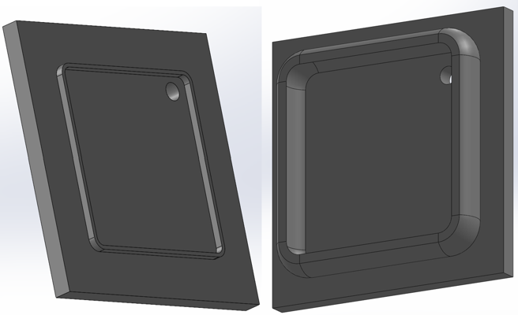
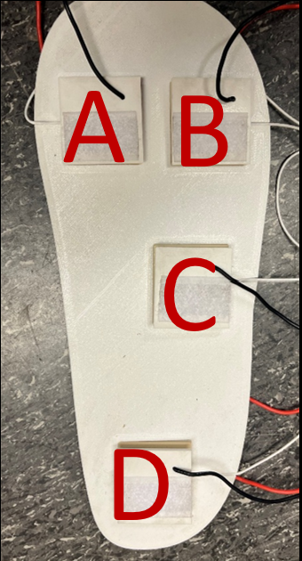

02 / Design & Prototyping
From sensing element to wearable prototype.
I designed and fabricated a wearable prototype incorporating four triboelectric sensing locations paired with load cells, enabling simultaneous measurement of applied force and generated voltage at different regions of the foot.

Fabricated triboelectric sensing elements.

CAD development of the sensing-element housing.

Four sensing locations distributed across the wearable sole.